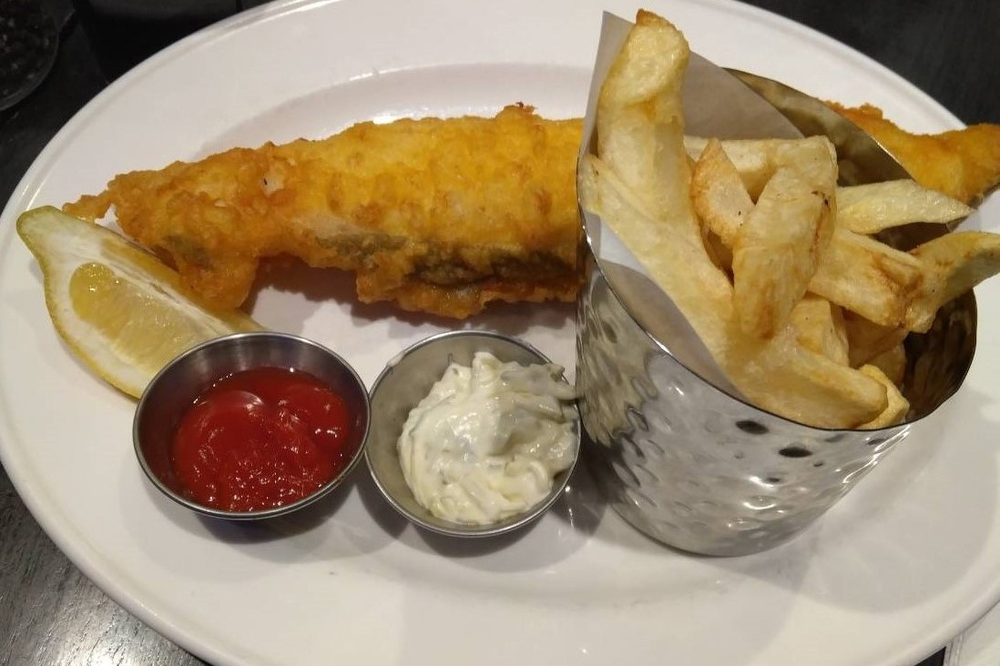

Dieting
 Supermarket:
There are various foods in the supermarket, and the price is much cheaper than restaurants’ food. I recommend two big supermarkets, Tesco and Sainsbury’s. In addition to sandwich and salad, there are some delicious meals in the deli section. Two important things you can’t miss in the supermarket are fruits and dairy products. Their fruits are cheap and tasty and you can have a chance to try some fruits you never see before. The taste of strawberries in the UK is totally different from in Taiwan. Moreover, their milk and yogurt also have a lower price. They will be a good choice for breakfast.
Supermarket:
There are various foods in the supermarket, and the price is much cheaper than restaurants’ food. I recommend two big supermarkets, Tesco and Sainsbury’s. In addition to sandwich and salad, there are some delicious meals in the deli section. Two important things you can’t miss in the supermarket are fruits and dairy products. Their fruits are cheap and tasty and you can have a chance to try some fruits you never see before. The taste of strawberries in the UK is totally different from in Taiwan. Moreover, their milk and yogurt also have a lower price. They will be a good choice for breakfast.
超市: 大部分的食物都很便宜，我推薦兩間有名的超市，Tesco和Sainsbury’s，除了三明治和沙拉，熟食區的食物也不錯，而有兩樣東西一定要買，就是水果和乳製品，你可以嘗試一些之前沒看過的水果，還有，他們的草莓味道也跟台灣的不同，另外，乳製品像是牛奶、優格也都超便宜，很適合當早餐。
Bazaar:
Because I went to a lot of bazaars in the UK, I think it is a good place to eat some special food. And, I went with my friends, so we can try various foods and share together. Some foods are delicious there, but some are not tasty. It depends on your vision whether you will meet great food. The coolest thing I found in bazaar is that all the vendors accept credit card payment. Credit cards are quite common in England. Therefore, make sure you have a credit card that can use abroad.
市集: 我覺得市集裡的食物很值得一試，你會找到一些特色小吃在那裡，我跟朋友們就在市集一起嘗試各種不同的食物，當然，還是有踩雷的可能，我覺得市集很酷的一點是，每個攤販都有刷卡機，你可以在市集裡刷卡，因為信用卡在英國十分普及。

Restaurants:
Though the restaurants are expensive, you should try some local food since you’ve already in the UK. Here I would introduce several foods I love. First is the representative food, fish & chips. Because I only tried it once, I can’t recommend the restaurants to you. The only thing I can tell is that there are different kinds of fishes, so you can ask the waiter to recommend. Second, I strongly recommend a restaurant called Nando’s. It is actually a south African restaurant. Their grilled chickens are so delicious. Nando’s is a chain restaurant, so you can find it easily around the british street. Third, bun is also a famous food in England. I tried it in an unknown restaurant Sally Lunn’s. It is located in Bath. In addition to sweet taste, there is also salty one. But, I think that sweet is better. It is a great choice for afternoon tea.
餐廳: 雖然很貴，但是都到英國了，還是要去吃吃看當地食物，我想介紹三樣不錯的食物，第一，當然是最有名的炸魚薯條，因為我只吃了一家，所以無法推薦，如果要去吃，你只需要注意一件事，因為魚的種類很多，可以請店員推薦哪種魚好吃。第二其實是一間來自南非的餐廳，叫Nando's，他們的考雞超級好吃，而且是連鎖店，在路上很容易找到，最後一間是Sally Lynn's, 可以吃英國有名的圓麵包，這間店有鹹和甜的口味，我個人比較喜歡甜的，如果來巴斯，可以來這喝個下午茶。
 Cooking
Cooking will be an interesting part when you travel abroad. Because I think foods in the UK are not varied compare to Taiwan, it is difficult to eat outside every day, and the costs will be too high. Also, our eating habits aren’t like theirs. Therefore, cooking by yourselves will be suitable. You can buy some special food ingredients in the supermarket, such as spaghetti with special shapes, strange vegetables you never saw. It is free for you to cook everything.
Cooking
Cooking will be an interesting part when you travel abroad. Because I think foods in the UK are not varied compare to Taiwan, it is difficult to eat outside every day, and the costs will be too high. Also, our eating habits aren’t like theirs. Therefore, cooking by yourselves will be suitable. You can buy some special food ingredients in the supermarket, such as spaghetti with special shapes, strange vegetables you never saw. It is free for you to cook everything.
自己煮其實也是一件很棒的事，因為英國的外食種類其實不像台灣這麼多，外食費用也十分可觀，而且我們的飲食習慣十分不同，所以，自己煮是一個好選擇，你可以在超市買一些特殊的食材像是形狀特別的義大利麵，或陌生的蔬菜，你可以自己創造你的英式料理。